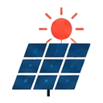

やりたいことから探す
LED照明、高効率の空調、給湯器、冷凍冷蔵設備などの省エネ設備を入れる前に、国と自治体の補助金を調べる手順をまとめました。設備ごとの解説への案内もあります。
 結論：LED・空調・給湯器などの省エネ設備は、国と自治体の「省エネ補助」を、設備ごとに探す
結論：LED・空調・給湯器などの省エネ設備は、国と自治体の「省エネ補助」を、設備ごとに探す
LED照明、高効率の空調、業務用の給湯器、冷凍冷蔵設備、太陽光発電・蓄電池など、省エネ・再エネの設備を入れるときは、まず次の2つを確認します。
- 国の省エネ関連の補助金：高効率空調・業務用給湯器・冷凍冷蔵設備など、省エネ性能の高い設備への更新を支援する制度があります（実施団体：環境共創イニシアチブ）。公募の時期・対象設備・補助率は、年度や公募回ごとに変わります。
- 自治体（都道府県・市区町村）の助成：LED照明、高効率空調、省エネ診断に基づく改修などを助成する自治体があります。実施の有無・金額・時期は、地域で違います。
設備ごとの、くわしい解説はこちらです：

検討したい制度と、向く場面
| 制度 | 向く場面 | 省エネ設備との関係（考え方） | 確認先・解説 |
|---|---|---|---|
| 国の省エネ関連の補助金（SII） | 高効率な設備に、まとめて更新したい | 対象設備の基準（型番・性能）を満たすことが条件。公募の有無・条件は、公式サイトで確認。 | SII（環境共創イニシアチブ） |
| 自治体の省エネ機器の助成 | LED・空調・給湯器などの、事業所の省エネ化 | 実施の有無・内容は地域で違う。 | 地域別の補助金 |
| 省力化・設備投資の補助金 | 省エネに加えて、人手不足の解消も狙う | 設備の目的が、省力化・新事業の場合に検討。 | 省力化投資補助金とは |
掲載している自治体の制度の例です（全23件のうち6件を、地域が重ならないように表示）。実施の有無・金額・受付期間は、地域と年度で変わります。最新の内容は、各自治体の公式ページで確認してください。
- 中小規模事業者省エネルギー設備等導入支援補助
神奈川県・相模原市｜上限100万円、補助率3分の1以内（要確認）｜締切：2026-10-30 - 京都市中小事業者の省エネリノベーション支援事業補助金（令和8年度7月補正予算事業）
京都府・京都市｜補助率：3分の1（要確認）。上限200万円（要確認）。下限20万円（前回募集の数値） - 神戸市省エネ設備更新補助金（国の交付金を活用した物価高対策）
兵庫県・神戸市｜要確認 - 新宿区省エネルギー及び創エネルギー機器等補助制度（事業所向け）
東京都・新宿区｜太陽光発電：1kWあたり10万円、上限80万円。LED照明・高効率空調：施工経費（税抜）の50%、上限25万円。再エネ電力導入の場合はLED・空調を補助率70%、上限50万円｜締切：2027-03-12 - 小樽市中小企業等省エネ推進補助金
北海道・小樽市｜補助率1/2以内、上限100万円｜締切：2026-11-30 - 中小規模事業所省エネ対策設備導入補助金
茨城県｜要確認｜締切：2026-12-18

 購入の前に確認すること
購入の前に確認すること
- 対象設備の基準：補助の対象になる性能の基準（型番の登録・基準値）があるか。販売店に、型番が対象かを確認する。
- 省エネ効果の説明：入れ替えによる効果を、見積もりや計算書、カタログで示せるか。省エネ診断が条件の制度もある。
- 新品かどうか・工事の範囲：中古は対象外のことが多い。設置・配線・撤去の費用が、対象に含まれるか。
- 国と自治体の併用：併用の扱いは、制度ごとに決まっている。
- 賃貸の場合：貸主（大家さん）の承諾が必要なことがある。
⚠ 契約・発注の注意
工事の着工や機器の購入の前に、申請が必要な制度が多くあります。先に工事を始めたり、購入したりすると、対象外になります。LEDなどの小さな設備も、同じです。


いま募集中の補助金（省エネ・設備投資に関係しそうなもの）jGrants（デジタル庁）の公開データから、関係しそうな、募集中の補助金を表示します（締切が近い順）。
読み込み中…

よくある質問
Q. LED照明だけでも、補助の対象になりますか？
A. 制度によって、LED照明を対象にするもの、一定の金額以上の設備だけを対象にするものがあります。自治体の制度から探すのが近道です。
Q. どこから調べるのがよいですか？
A. 事業所のある市区町村・都道府県の公式サイトで、省エネ機器の助成を確認し、そのうえで、国の制度（SII）の公募状況を確認します。

最新情報の確認先（公式）
制度の内容は変わります。次の公式情報で、最新の内容を確認してください。
最終更新日：2026年10月17日